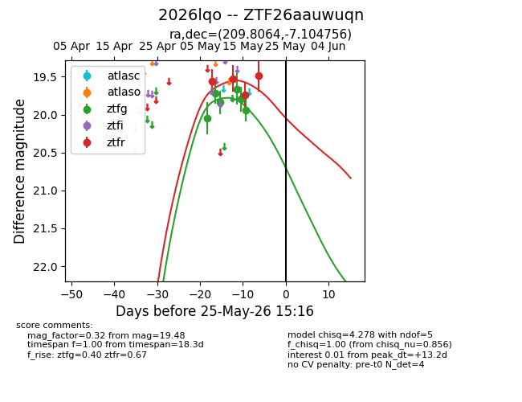
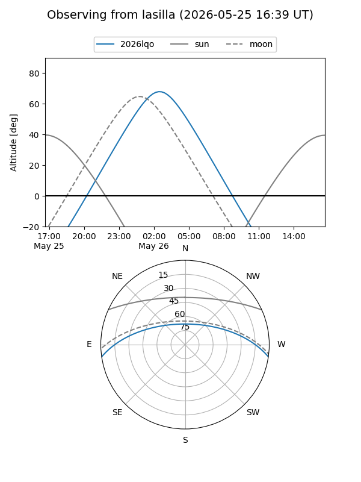
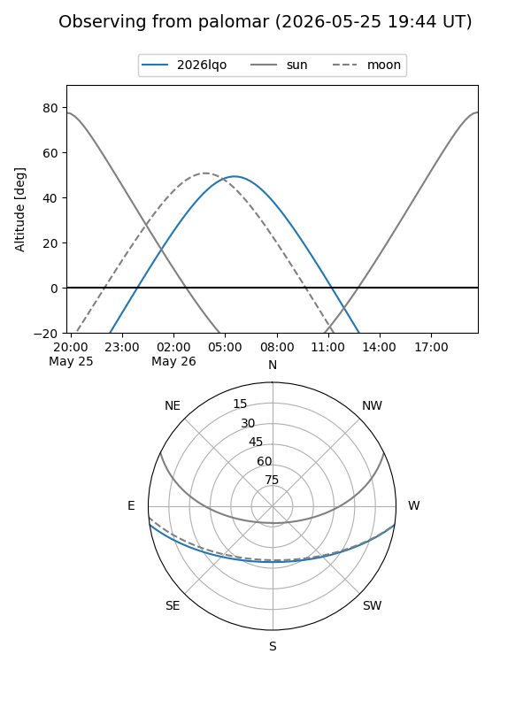
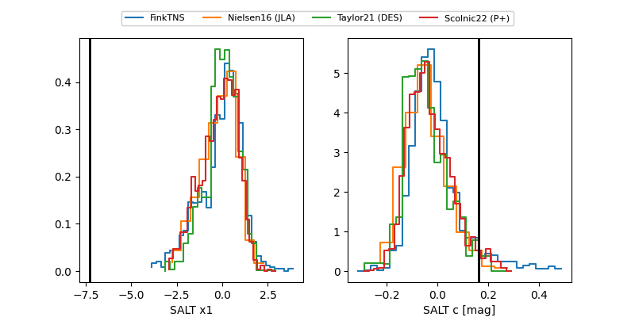

2026lqo
Target 2026lqo at 2026-05-25 15:18
Aliases and brokers:
lsst-FINK: link
lsst-Lasair: link
lsst-ALeRCE: link
ztf-FINK: link
ztf-Lasair: link
ztf-ALeRCE: link
TNS: link
YSE: link
alt names
ZTF26aauwuqn (ztf,fink_ztf)
2026lqo (tns,yse)
Coordinates:
equatorial (ra, dec) = 209.8064,-7.10476
equatorial (HMS+DMS) = 13:59:13.53,-07:06:17.12
galactic (l, b) = (330.9793,+52.03679)
Flags:
Photometry:
last ztfg=19.94, ztfr=19.48
6 ztfg, 4 ztfr detections
Lightcurve

Visibility


Additional plots
